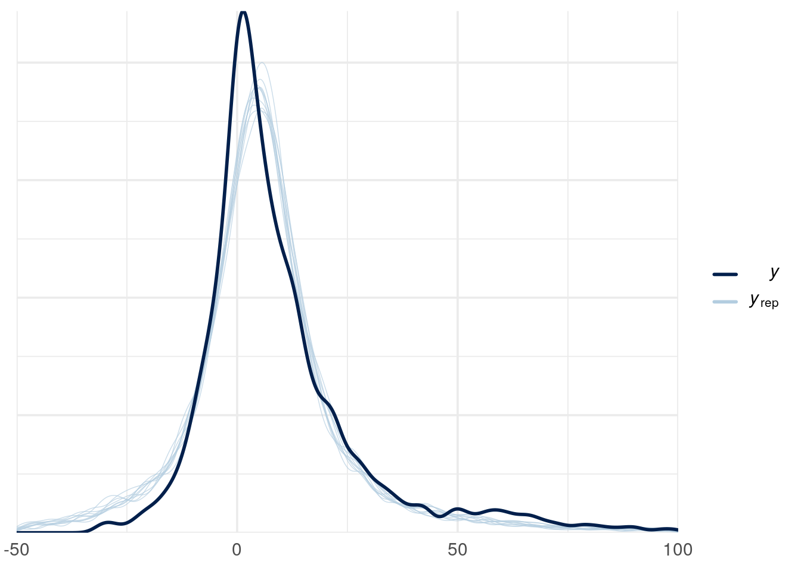
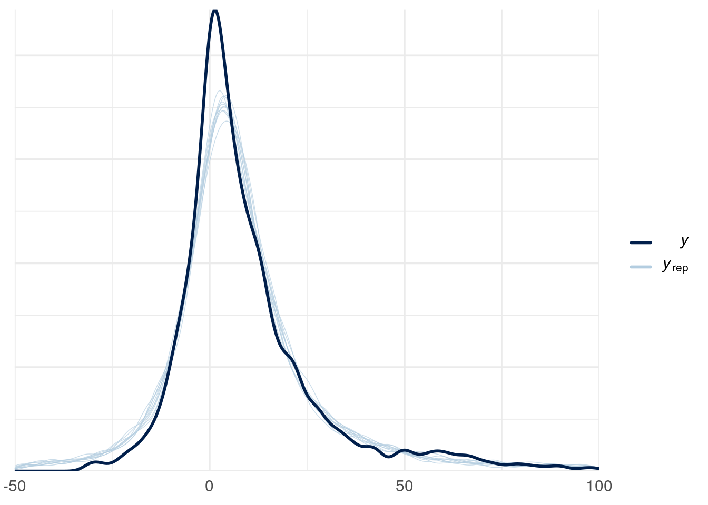
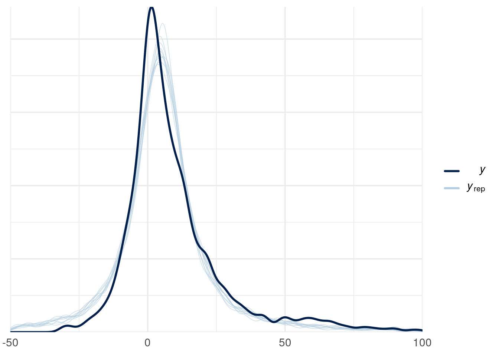

data = read.csv("data/WLD_RTFP_country_2023-11-06.csv")
inflation_data = data[!is.na(data$Inflation),]BDA Project
Read & clean the data
Priors
priors_pooled <- c(
set_prior("normal(0, 10)", class = "b"),
set_prior("normal(0, 5)", class = "Intercept"),
set_prior("gamma(2, 0.1)", class = "nu") # Correct prior for degrees of freedom in Student's t
)
priors_hierarchical <- c(
set_prior("normal(0, 10)", class = "b"),
set_prior("normal(0, 5)", class = "Intercept"),
set_prior("gamma(2, 0.1)", class = "nu") # Correct prior for degrees of freedom in Student's t
)Pooled model
pooled_model <- brms::brm(
# This specifies the formula
Inflation ~ Close,
# This specifies the dataset
data = inflation_data,
# This specifies the observation model family
family = student,
# This passes the priors specified above to brms
prior = priors_pooled,
# This causes brms to cache the results
file = "models/pooled"
)Hierarchical model
hierarchical_model <- brms::brm(
# This specifies the formula
Inflation ~ Close + (1 + Close | country),
# This specifies the dataset
data = inflation_data,
# This specifies the observation model family
family = student,
# This passes the priors specified above to brms
prior = priors_hierarchical,
# This causes brms to cache the results
file = "models/hierarchical"
)Convergence diagnostics
summary(pooled_model) Family: student
Links: mu = identity; sigma = identity; nu = identity
Formula: Inflation ~ Close
Data: inflation_data (Number of observations: 4459)
Draws: 4 chains, each with iter = 2000; warmup = 1000; thin = 1;
total post-warmup draws = 4000
Population-Level Effects:
Estimate Est.Error l-95% CI u-95% CI Rhat Bulk_ESS Tail_ESS
Intercept -0.10 0.24 -0.57 0.38 1.00 4169 3211
Close 5.01 0.15 4.74 5.32 1.00 2732 2337
Family Specific Parameters:
Estimate Est.Error l-95% CI u-95% CI Rhat Bulk_ESS Tail_ESS
sigma 8.48 0.20 8.10 8.87 1.00 2898 2852
nu 1.48 0.05 1.38 1.58 1.00 2757 2789
Draws were sampled using sampling(NUTS). For each parameter, Bulk_ESS
and Tail_ESS are effective sample size measures, and Rhat is the potential
scale reduction factor on split chains (at convergence, Rhat = 1).summary(hierarchical_model)Warning: Parts of the model have not converged (some Rhats are > 1.05). Be
careful when analysing the results! We recommend running more iterations and/or
setting stronger priors. Family: student
Links: mu = identity; sigma = identity; nu = identity
Formula: Inflation ~ Close + (1 + Close | country)
Data: inflation_data (Number of observations: 4459)
Draws: 4 chains, each with iter = 2000; warmup = 1000; thin = 1;
total post-warmup draws = 4000
Group-Level Effects:
~country (Number of levels: 25)
Estimate Est.Error l-95% CI u-95% CI Rhat Bulk_ESS
sd(Intercept) 21.93 3.16 16.70 29.04 1.00 868
sd(Close) 18.85 2.75 14.30 25.09 1.01 820
cor(Intercept,Close) -0.96 0.02 -0.98 -0.91 1.01 940
Tail_ESS
sd(Intercept) 1329
sd(Close) 1204
cor(Intercept,Close) 1319
Population-Level Effects:
Estimate Est.Error l-95% CI u-95% CI Rhat Bulk_ESS Tail_ESS
Intercept -12.09 4.31 -20.30 -3.26 1.01 684 1172
Close 18.18 3.62 10.62 24.82 1.01 710 1067
Family Specific Parameters:
Estimate Est.Error l-95% CI u-95% CI Rhat Bulk_ESS Tail_ESS
sigma 6.33 0.18 5.99 6.69 1.09 29 147
nu 1.29 0.05 1.20 1.37 1.11 25 126
Draws were sampled using sampling(NUTS). For each parameter, Bulk_ESS
and Tail_ESS are effective sample size measures, and Rhat is the potential
scale reduction factor on split chains (at convergence, Rhat = 1).Posterior predictive checks
pp_check(pooled_model) + xlim(-50, 100)Using 10 posterior draws for ppc type 'dens_overlay' by default.Warning: Removed 2008 rows containing non-finite values (`stat_density()`).Warning: Removed 148 rows containing non-finite values (`stat_density()`).
pp_check(hierarchical_model) + xlim(-50, 100)Using 10 posterior draws for ppc type 'dens_overlay' by default.Warning: Removed 1895 rows containing non-finite values (`stat_density()`).
Removed 148 rows containing non-finite values (`stat_density()`).
Sensitivity analysis
# Stronger priors for the pooled model
priors_pooled_2 <- c(
set_prior("normal(0, 2.5)", class = "b"),
set_prior("normal(0, 1)", class = "Intercept"),
set_prior("gamma(2, 0.1)", class = "nu") # Assuming degrees of freedom to allow some robustness to outliers
)
# Stronger priors for the hierarchical model
priors_hierarchical_2 <- c(
set_prior("normal(0, 2.5)", class = "b"),
set_prior("normal(0, 1)", class = "Intercept"),
set_prior("gamma(2, 0.1)", class = "nu")
)
pooled_model_2 <- brms::brm(
# This specifies the formula
Inflation ~ Close,
# This specifies the dataset
data = inflation_data,
# This specifies the observation model family
family = student,
# This passes the priors specified above to brms
prior = priors_pooled_2,
# This causes brms to cache the results
file = "models/pooled_2"
)
hierarchical_model_2 <- brms::brm(
# This specifies the formula
Inflation ~ Close + (1 + Close | country),
# This specifies the dataset
data = inflation_data,
# This specifies the observation model family
family = student,
# This passes the priors specified above to brms
prior = priors_hierarchical_2,
# This causes brms to cache the results
file = "models/hierarchical_2"
)
summary(pooled_model_2) Family: student
Links: mu = identity; sigma = identity; nu = identity
Formula: Inflation ~ Close
Data: inflation_data (Number of observations: 4459)
Draws: 4 chains, each with iter = 2000; warmup = 1000; thin = 1;
total post-warmup draws = 4000
Population-Level Effects:
Estimate Est.Error l-95% CI u-95% CI Rhat Bulk_ESS Tail_ESS
Intercept -0.23 0.22 -0.67 0.21 1.00 3842 3256
Close 4.92 0.13 4.67 5.21 1.00 3421 2521
Family Specific Parameters:
Estimate Est.Error l-95% CI u-95% CI Rhat Bulk_ESS Tail_ESS
sigma 8.42 0.20 8.03 8.79 1.00 3085 3084
nu 1.46 0.05 1.37 1.56 1.00 2701 2767
Draws were sampled using sampling(NUTS). For each parameter, Bulk_ESS
and Tail_ESS are effective sample size measures, and Rhat is the potential
scale reduction factor on split chains (at convergence, Rhat = 1).summary(hierarchical_model_2) Family: student
Links: mu = identity; sigma = identity; nu = identity
Formula: Inflation ~ Close + (1 + Close | country)
Data: inflation_data (Number of observations: 4459)
Draws: 4 chains, each with iter = 2000; warmup = 1000; thin = 1;
total post-warmup draws = 4000
Group-Level Effects:
~country (Number of levels: 25)
Estimate Est.Error l-95% CI u-95% CI Rhat Bulk_ESS
sd(Intercept) 27.27 4.39 20.13 37.53 1.00 399
sd(Close) 28.76 4.40 21.62 39.49 1.00 421
cor(Intercept,Close) -0.94 0.03 -0.98 -0.86 1.00 456
Tail_ESS
sd(Intercept) 894
sd(Close) 738
cor(Intercept,Close) 831
Population-Level Effects:
Estimate Est.Error l-95% CI u-95% CI Rhat Bulk_ESS Tail_ESS
Intercept 0.53 3.73 -6.64 8.03 1.01 391 693
Close 0.39 2.40 -4.36 5.07 1.01 444 787
Family Specific Parameters:
Estimate Est.Error l-95% CI u-95% CI Rhat Bulk_ESS Tail_ESS
sigma 6.37 0.17 6.04 6.69 1.00 2585 2894
nu 1.29 0.04 1.21 1.38 1.00 2472 2025
Draws were sampled using sampling(NUTS). For each parameter, Bulk_ESS
and Tail_ESS are effective sample size measures, and Rhat is the potential
scale reduction factor on split chains (at convergence, Rhat = 1).pp_check(pooled_model_2) + xlim(-50, 100)Using 10 posterior draws for ppc type 'dens_overlay' by default.Warning: Removed 2032 rows containing non-finite values (`stat_density()`).Warning: Removed 148 rows containing non-finite values (`stat_density()`).
pp_check(hierarchical_model_2) + xlim(-50, 100)Using 10 posterior draws for ppc type 'dens_overlay' by default.Warning: Removed 1838 rows containing non-finite values (`stat_density()`).
Removed 148 rows containing non-finite values (`stat_density()`).Model comparison (LOO-CV)
loo_p <- loo(pooled_model)
loo_h <- loo(hierarchical_model)
loo_p2 <- loo(pooled_model_2)
loo_h2 <- loo(hierarchical_model_2)
loo_p
Computed from 4000 by 4459 log-likelihood matrix
Estimate SE
elpd_loo -19177.2 96.9
p_loo 7.1 0.7
looic 38354.4 193.7
------
Monte Carlo SE of elpd_loo is 0.1.
All Pareto k estimates are good (k < 0.5).
See help('pareto-k-diagnostic') for details.loo_h
Computed from 4000 by 4459 log-likelihood matrix
Estimate SE
elpd_loo -18499.1 104.8
p_loo 208.8 27.1
looic 36998.1 209.6
------
Monte Carlo SE of elpd_loo is 3.6.
All Pareto k estimates are good (k < 0.5).
See help('pareto-k-diagnostic') for details.loo_p2
Computed from 4000 by 4459 log-likelihood matrix
Estimate SE
elpd_loo -19177.8 97.0
p_loo 6.3 0.6
looic 38355.6 194.1
------
Monte Carlo SE of elpd_loo is 0.0.
All Pareto k estimates are good (k < 0.5).
See help('pareto-k-diagnostic') for details.loo_h2
Computed from 4000 by 4459 log-likelihood matrix
Estimate SE
elpd_loo -18424.6 101.2
p_loo 85.3 4.6
looic 36849.1 202.4
------
Monte Carlo SE of elpd_loo is 0.2.
All Pareto k estimates are good (k < 0.5).
See help('pareto-k-diagnostic') for details.loo_compare(loo_p, loo_h, loo_p2, loo_h2) elpd_diff se_diff
hierarchical_model_2 0.0 0.0
hierarchical_model -74.5 21.5
pooled_model -752.7 50.0
pooled_model_2 -753.2 50.2